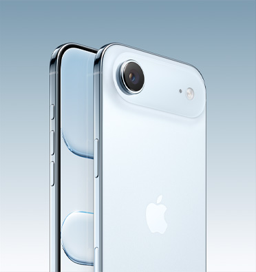

NOVO · 2026


O próximo capítulo da tecnologia chegou.
Descubra os novos iPhones em uma experiência à altura.
NOVA GERAÇÃO 2026
iPhone 18 Pro Max
Uma nova era Pro. Sistema avançado de câmeras, desempenho excepcional e design criado para impressionar.

CONHEÇA O IMPOSSÍVEL
Um novo jeito de ver tudo. Fechado, cabe na sua rotina. Aberto, transforma o que você pode fazer.
Conheça a família ↗
Tela externa compacta e tela interna dobrável.
Branco-estrela e céu noturno.
Produtividade e entretenimento lado a lado.
Encontre a geração que combina com você. Explore os modelos, conheça as diferenças e fale com nossa equipe.



Modelo convencional ainda sem anúncio oficial da Apple.
As imagens oficiais da Apple são usadas como referência visual. Fotos ilustrativas dos modelos existentes não representam estoque ou oferta confirmada. Consulte disponibilidade, cor, capacidade e preço diretamente com a iUP.
Oito gerações. Diferentes personalidades. Descubra todas as cores de cada modelo e escolha a sua favorita.
LANÇAMENTO · 2026
A nova geração Pro, do seu jeito.
Bordô
Visualização interativa ilustrativa da cor. Formas e materiais não são renders oficiais.
Uma seleção de filmes de lançamento publicados pelos canais oficiais da Apple.
Os vídeos são reproduzidos pelo YouTube, a partir dos canais oficiais da Apple Brasil, somente após você clicar em assistir. A iUP não é responsável pela disponibilidade dos vídeos de terceiros.
Gente de verdade, escolhas com confiança e atendimento próximo em Rio Claro.
Converse com nossa equipe sobre suas preferências, opções e necessidades antes de escolher.
Parcelamento no cartão sujeito a condições, taxas e análise no momento da compra.
Você também pode conhecer nossa loja no Centro de Rio Claro e receber atendimento pessoalmente.
Conheça nosso espaço, descubra os modelos e encontre a opção ideal para a sua rotina.
 PRAZER, iUP CONCEPT.
PRAZER, iUP CONCEPT.Esta vitrine é informativa e não indica estoque confirmado. Fale com nossa equipe para consultar modelos, cores, capacidades, valores e prazos atualizados.
Até 17 de novembro de 2026, a Apple não anunciou oficialmente o iPhone 18 convencional. Por isso, não exibimos renders, cores ou especificações como se fossem oficiais.
Os nomes de cores são baseados nas opções anunciadas pela Apple. A visualização 3D interativa é uma ilustração simplificada do acabamento e não substitui a fotografia oficial de cada variante.
A loja divulga parcelamento em até 18 vezes no cartão. Taxas, condições e preços dependem da compra: peça uma simulação personalizada.
Estamos na Rua 7, 614, sala 06, Centro, Rio Claro — SP. Consulte horários no WhatsApp antes de visitar.
Um bom iPhone faz a diferença.
Uma boa escolha também.